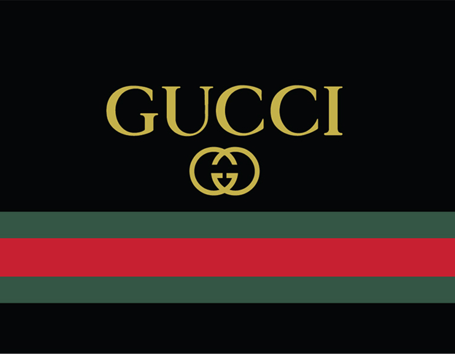

Fixed Full-heigth side nax
TOP 10 trademarks in the world
try to scroll this erea , and see how the sidenav
Notice that this dic element has a left margin of 25%. this is a because Notice that this div element has a left margin of 25%. This is because the side navigation is set to 25% width. If you remove the margin, the sidenav will overlay/sit on top of this div.
Also notice that we have set overflow:auto to sidenav. This will add a scrollbar when the sidenav is too long (for example if it has over 50 links inside of it).
Starbucks was founded in 1971 by Jerry Baldwin, Zev Siegl, and Gordon Bowker at Seattle's Pike Place Market. During the early 1980s, they sold the company to Howard Schultz who – after a business trip to Milan, Italy – decided to convert the coffee bean store into a coffee shop serving espresso-based drinks. As chief executive officer from 1986 to 2000, Schultz's first tenure led to an aggressive expansion of the franchise, first in Seattle, then across the West Coast of the United States. Schultz was succeeded by Orin Smith who ran the company for five years and positioned Starbucks as a large player in fair trade coffee, increasing sales to US$5 billion. Jim Donald served as chief executive officer from 2005 to 2008, orchestrating a large-scale earnings expansion. Schultz returned as CEO during the financial crisis of 2007–08 and spent the succeeding decade growing the company's market share, expanding its offerings, and reorienting the brand around corporate social responsibility. Kevin Johnson, the current CEO, succeeded Schultz in 2017. In March 2022, Starbucks announced that Schultz would return as CEO in April 2022.[4]
KFC (Kentucky Fried Chicken) is an American fast food restaurant chain headquartered in Louisville, Kentucky, that specializes in fried chicken. It is the world's second-largest restaurant chain (as measured by sales) after McDonald's, with 22,621 locations globally in 150 countries as of December 2019.[4] The chain is a subsidiary of Yum! Brands, a restaurant company that also owns the Pizza Hut and Taco Bell chains.[5] KFC was founded by Colonel Harland Sanders (1890–1980), an entrepreneur who began selling fried chicken from his roadside restaurant in Corbin, Kentucky, during the Great Depression. Sanders identified the potential of the restaurant franchising concept and the first "Kentucky Fried Chicken" franchise opened in Utah in 1952. KFC popularized chicken in the fast-food industry, diversifying the market by challenging the established dominance of the hamburger. By branding himself as "Colonel Sanders", Harland became a prominent figure of American cultural history and his image remains widely used in KFC advertising to this day. However, the company's rapid expansion overwhelmed the aging Sanders and he sold it to a group of investors led by John Y. Brown Jr. and Jack C. Massey in 1964.

Dick and Mac McDonald moved to California to seek opportunities they felt unavailable in New England. Failing in the movie business, they subsequently proved successful in operating drive-in restaurants. In 1948 they took a risk by streamlining their operations and introducing their Speedee Service System featuring 15 cent hamburgers. The restaurant’s success led the brothers to begin franchising their concept—nine becoming operating restaurants. At the San Bernardino location, Dick and Mac McDonald perfected their Speedee Service System featuring a limited menu including fifteen cent hamburgers, shakes and fries. The brothers sold 14 franchises of which 10 became operating restaurants not including their original location in San Bernardino.
.png)
Subway is an American multinational fast food restaurant franchise that specializes in submarine sandwiches (subs), wraps, salads and drinks. Subway was founded by 17-year-old Fred DeLuca and financed by Peter Buck in 1965 as Pete's Super Submarines[7] in Bridgeport, Connecticut. After several name changes in the beginning years, it was finally renamed Subway in 1972, and a franchise operation began in 1974 with a second restaurant in Wallingford, Connecticut.[8] Since then, it has expanded to become a global franchise. Subway serves an array of topping choices, allowing the customer to choose which toppings are included in their sandwich. The longtime Subway slogan, "Eat Fresh", is intended to indicate the fresh ingredients that are used in their sandwiches. It was the fastest-growing franchise in the world in 2015[9] and, as of June 2021, had 37,540 locations in more than 100 countries and territories. More than half its locations (21,796 or 58.1%) are in the United States.[2][10][11] It also is the largest single-brand restaurant chain, and the largest restaurant operator in the
.png)
Burger King (BK) is an American-based multinational chain of hamburger fast food restaurants. Headquartered in Miami-Dade County, Florida, the company was founded in 1953 as Insta-Burger King, a Jacksonville, Florida–based restaurant chain. After Insta-Burger King ran into financial difficulties in 1954, its two Miami-based franchisees David Edgerton (1927–2018) and James McLamore (1926–1996) purchased the company and renamed it "Burger King".[5] Over the next half-century, the company changed hands four times and its third set of owners, a partnership of TPG Capital, Bain Capital, and Goldman Sachs Capital Partners took it public in 2002. In late 2010, 3G Capital of Brazil acquired a majority stake in the company, in a deal valued at US$3.26 billion. The new owners promptly initiated a restructuring of the company to reverse its fortunes. 3G, along with partner Berkshire Hathaway, eventually merged the company with the Canadian-based doughnut chain Tim Hortons, under the auspices of a new Canadian-based parent company named Restaurant Brands International.
Google, in full Google LLC formerly Google Inc. (1998–2017), American search engine company, founded in 1998 by Sergey Brin and Larry Page, that is a subsidiary of the holding company Alphabet Inc. More than 70 percent of worldwide online search requests are handled by Google, placing it at the heart of most Internet users’ experience. Its headquarters are in Mountain View, California. Google began as an online search firm, but it now offers more than 50 Internet services and products, from e-mail and online document creation to software for mobile phones and tablet computers. In addition, its 2012 acquisition of Motorola Mobility put it in the position to sell hardware in the form of mobile phones. Google’s broad product portfolio and size make it one of the top four influential companies in the high-tech marketplace, along with Apple, IBM, and Microsoft. Despite this myriad of products, its original search tool remains the core of its success. In 2016 Alphabet earned nearly all of its revenue from Google advertising based on users’ search requests.
forirnfnf
People use Twitter to get the latest updates and promotions from brands; communicate with friends; and follow business leaders, politicians and celebrities. They also use it to stay current on news and events. Twitter was the first source to break the news of the water landing of US Airways Flight 549 in New York City's Hudson River. Twitter is used to share information quickly. Because tweets can be delivered to followers in real time, they might seem like instant messages (IM) to the novice user. But unlike IMs that disappear when the user closes the application, tweets are also posted on the Twitter website. They are permanent, searchable and public. There is also an option to protect tweets so only followers can read tweets.

It started with skateboarding. Next, it became a staple of basketball. And now it’s even hit soccer. Nike’s “What The?” series, which mashes up different colorways, themes, and inspirations on a single pair of shoes, has become one of the brand’s most recognizable (and possibly overused) concepts. And with the recent news of the “What The” Mercurial Superfly, it’s showing no signs of slowing down. Here’s a complete rundown of the history of the line.

It started with skateboarding. Next, it became a staple of basketball. And now it’s even hit soccer. Nike’s “What The?” series, which mashes up different colorways, themes, and inspirations on a single pair of shoes, has become one of the brand’s most recognizable (and possibly overused) concepts. And with the recent news of the “What The” Mercurial Superfly, it’s showing no signs of slowing down. Here’s a complete rundown of the history of the line.
For more than three decades, Apple Computer was predominantly a manufacturer of personal computers, including the Apple II, Macintosh, and Power Mac lines, but it faced rocky sales and low market share during the 1990s. Jobs, who had been ousted from the company in 1985, returned to Apple in 1997 after his company NeXT was bought by Apple.[4] The following year he became the company's interim CEO,[5] which later became permanent.[6] Jobs subsequently instilled a new corporate philosophy of recognizable products and simple design, starting with the original iMac in 1998. With the introduction of the successful iPod music player in 2001 and iTunes Music Store in 2003, Apple established itself as a leader in the consumer electronics and media sales industries, leading it to drop "Computer" from the company's name in 2007. The company is also known for its iOS range of smart phone, media player, and tablet computer products that began with the iPhone, followed by the iPod Touch and then iPad. As of June 30, 2015,